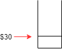
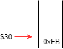
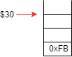
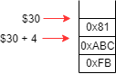
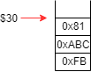
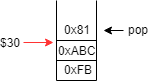
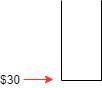
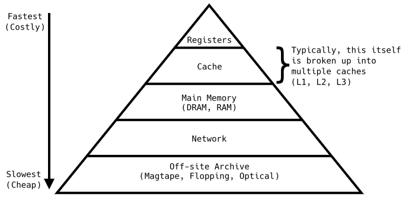

CS 230 - Introduction to Computers and Computer Systems |
|
| Instructor: | Rob Hackman |
|---|---|
| Office: | DC2551A |
| Email: | r2hackma@uwaterloo.ca |
| Website: | https://www.student.cs.uwaterloo.ca/~cs230/ |
| Note: | All program codes in this course notes are provided by Prof. Hackman during class. |
Lecture 8 - 30/01/2018
Assignment 2 due this Friday (2nd February, 2018) at 5pm!
Midterm is next week, Thursday 8th February, 2018!
Questions from last lecture?
The stack - controlled (used) through a pointer (a memory address) to the current location of the stack.
Our stack pointer is in $30.
Stack starts at the BOTTOM (END) of our memory and "grows up" towards the start.
Note that we can't store store anything in the end of memory - that would go outside the memory space!
addi $30, $30, -4
; assume $1 is 0xFB sw $1, 0($30)
addi $30, $30, -8
; assume $2 is 0x81, $3 is 0xABC sw $2, 0($30) sw $3, 4($30)
addi $1, $0, 0xABD ; now $1 is 0xABD addi $2, $0, 0xEE ; now $2 is 0xEE addi $3, $0, 0xCC ; now $3 is 0xCC lw $2, 0($30) ; $2 is back to 0x81
addi $30, $30, 4
Note that even the value \(0x81\) is popped, it still exists in memory until we overwrite something into the memory.
lw $3, 0($30) lw $1, 4($30) ; now $3 is 0xABC and $1 is 0xFB add $30, $30, 8
Why bother learning assembly?
- Gain and understanding of what a program actually is (sequence of instructions)
- Understand how our high level languages can be interpreted by a computer
- Gain an appreciation for which high level constructs are slower (take more instructions)
-
Understand high level concepts better
- example: How is data actually represented?
Machine Internals and Performance
Computers are constructed with a CLOCK that determines the speed at which instructions are done.
Basically, it is a metronome for the computer - it keeps time for operations and achieves by sending an alternating signal of high/low voltage (in time).
Electric signal propagates pretty fast.
- Not infinitely fast, physical constraints
- Gate delay, time it takes for a signal to enter a gate and result exit the gate (at a steady state)
Clock Period (Cycle Time): Duration in seconds of a cycle
Clock Frequency (Clock Rate): Cycles per second (1/cycle time) in Hz (hertz)
Example: clock period of \(250ps = 250(10^{12}) s/cycle\).
Note: ps is picoseconds, a.k.a \(10^{12}\).
What is our clock rate?
\begin{align*}
1 \div 250(10^{-12}) &= 10^{12} \div 250 \\
&= 4(10^{9}) \\
&= 4GHz
\end{align*}
Our cycles are used to "time" operations.
Single Cycle Execution
- Execute one instruction per cycle
-
Fixed cycle time equal to the time it takes for our slowest instruction
- add v.s. multiply
- memory instructions (slow)
- If we want our common cases to be fast - then single cycle execution is not a great choice.
Measuring Performance
Time
-
Time to execute program (short as possible is goal!) - different ways of measuring this:
-
Elapsed Time (total response time): total real time it takes the program to execute from an outside perspective
It includes wait times (waiting for a resource like memory or hard dist), waiting for input, idle time.
-
Elapsed Time (total response time): total real time it takes the program to execute from an outside perspective
- CPU Time is how much time your program actually spends processing instructions and quite often CPU time is less than Elapsed time.
- Latency - time to execute one instruction
- Throughput - number of instructions executed per unit of time
Metrics of a Program/Hardware Combo
- Cycles Per Instruction (CPI) - determined by the CPU hardware, probable for different instructions to take different number of cycles
- Instruction count (IC) - the number of instructions in a program. Affected by primarily the program itself, the instruction set itself (e.g.
sltandbnev.s. "branch is less than", the compiler (how much does it optimizes)
Number of clock cycles for a program: \(IC \cdot CPI\)
\(CPU Time = IC \cdot CPI \cdot cycleTime\)
Example:
Computer A has a cycle time \(250ps\) and CPI is \(2.0\).
Computer B has a cycle time \(500ps\) and CPI is \(1.2\).
Both of them use same instruction set, running the same program. Which is faster?
\(CPU TIME_{A} = IC \cdot 20 \cdot 250ps = IC \cdot 500ps\)
\(CPU TIME_{B} = IC \cdot 1.2 \cdot 500ps = IC \cdot 600ps\)
So computer A is faster - how much faster?
\(CPU TIME_{B} \div CPU TIME_{A} = 600ps \div 500ps = 1.2\)
Computer A is \(1.2\) times faster than computer B.
Example: 3 different types of instructions, each takes a different number of cycles, 2 programs X and Y.
| I-type | A | B | C |
|---|---|---|---|
| CPI | 1 | 2 | 4 |
| ICx | 1 | 1 | 3 |
| ICY | 2 | 4 | 1 |
What is the weighted average CPI for programs X and Y? \begin{align*} CPI_X &= numbers \: of \: cycles \div numbers \: of \: instructions \\ &= \frac{1 \cdot 1 + 2 \cdot 1 + 4 \cdot 3}{1 + 1 + 3} \\ &= 3.0 \end{align*} \begin{align*} CPI_Y &= numbers \: of \: cycles \div numbers \: of \: instructions \\ &= \frac{1 \cdot 2 + 2 \cdot 4 + 4 \cdot 1}{2 + 4 + 1} \\ &= \frac{14}{7} \\ &= 2.0 \end{align*}
So program Y is using less cycles per instruction than X since it's using quicker instructions.
In summary, we can calculate CPU time required for some program as
\(CPUtime = IC \cdot CPI \cdot cycleTime = IC \cdot CPI \cdot (\frac{1}{clockRate})\)
We can try to reduce CPU time by...
- using less instructions
- Reduce our CPI time
- Faster clock (over-clocking)
Tradeoffs to all of these - we have other ways to increase performance.
Pipelining
The idea behind pipelining is to use all your resources as much possible, not have resources sit waiting.
A completely unpipelined task will do each task in sequence waiting for completion before starting the next.
A pipelined version will do multiple tasks in parallel, so long as there is no reason why it cannot. (The resource required is not available, or its not ready.)
The best real life analogy for pipelining is laundry. We have 4 tasks (wash, dry, fold, put away) and 3 resources (washer, dryer, manual labour).
In the pipelined version, we don't wait for one load to be completely finished (folded and put away) before starting the next load.
So our pipelined version is faster, by making sure our resources in use as often as possible.
In reality, it's not this clean , e.g. we have might have hang dry (take labour resource), can't fold and put away at same time.
Under pipelining, can I wash one article of clothing faster than without pipelining?
Pipelining does not affect LATENCY; it only affects throughput.
In MIPS, we break up our execution into 5 steps, each step takes one cycle, and all 5 can be done in the same cycle (they use different resources). So in theory, we could have 5 instructions currently executing in any one cycle (under ideal conditions).
Let's talk about our stages of execution.
-
Instruction Fetch (IF)
- load instruction from memory into the CPU
- load from the address in
$PC
-
Instruction Decode (ID)
- Determine which instruction this is and what registers it is using (decode the bits of the instruction)
- Read the values from the corresponding registers into the ALU (takes place in the second half of cycle)
- Also determine if it is a branch instruction
-
Execute (EX)
- Do the operation indicated by the instruction (done in the ALU)
- For
adddo addition - For
multdo multiplication - For
lw/swcompute the address$s + i, etc.
Lecture 9 - 01/02/2018
Five Stages of MIPS Execution Pipeline
-
Instruction Fetch (IF)
- load the instruction from memory into CPU
- load from address in
$PC(program counter register)
-
Instruction Decode (ID)
- determine which instruction this is (decoding the bits of the instruction
- read the values from the corresponding registers into the ALU (takes place in the second half of the cycle)
- also, determine if a branch is taken (extra hardware)
-
Execute (EX)
- do the operation the instruction says to do (done in ALU)
- for
add, do the addition - for
mult, do the multiplication - for
sw/lw, compute the address$w + i
-
Memory Address (MEM)
- accessing memory
- only used for
lw/swinstructions
-
Write Back (WB)
- write results into the destination register
- this happens in the first half of the clock cycle
Let's look at what stages of execution.
Some of our different instructions use and how long they take.
| instruction Class | IF | ID | EX | MEM | WB | Total |
|---|---|---|---|---|---|---|
lw (load word) |
200ps | 100ps | 200ps | 200ps | 100ps | 800ps |
sw (store word) |
200ps | 100ps | 200ps | 200ps | - | 700ps |
| R-Format | 200ps | 100ps | 200ps | - | 100ps | 600ps |
| Branch | 200ps | 100ps | 200ps (jump to) | - | - | 500ps |
What is the actual speedup gained from pipelining?
Under perfect conditions with all stages balanced (take the same time), then the speedup is equal to the number of stages.
Of course, if the stages aren't balanced (or we don't have perfect conditions), then the speedup is less.
In our example, we experienced a speedup \(800ps \div 200 ps = 4\) times as fast.
Example:
| cycle | 1 | 2 | 3 | 4 | 5 | 6 | |
|---|---|---|---|---|---|---|---|
| (1) | addi $8, $0, 2 |
IF | ID | EX | WB | ||
| (2) | sub $9, $9, $10 |
IF | ID | EX | WB |
Note that MEM does nothing in our example, so we just crossed it out.
Question: What if in our example above, instruction (2) was instead sub $9, $8, $10?
Pipeline Hazards
Hazard: a condition which blocks the flow of the pipeline
- instructions are (often) not completely independent
-
we have 3 types of Hazards:
- Data Hazard
- Control Hazard
- Structural Hazard
A data hazard is when data that is required for the execution of an instruction is not available yet. This is the problem we have above if we changed the subtract instruction to read from $8.
| 1 | 2 | 3 | 4 | 5 | 6 | 7 | 8 | ||
|---|---|---|---|---|---|---|---|---|---|
add $8, $9, $10 |
IF | ID | EX | MEM | WB | ||||
add $11, $8, $2 |
IF | - | - | ID | EX | MUM | WB | ||
Note that the two -s in row 3 are stalls (do nothing).
This is an example of data hazard; it is called a "Read After Write" or "RAW" hazard.
Example:
| 1 | 2 | 3 | 4 | 5 | 6 | add $8, $9, $10 |
IF | ID | EX | MEM | WB |
|---|---|---|---|---|---|---|
slt $8, $12, $13 |
IF | ID | EX | MEM | WB |
This is not a pipeline hazard.
This iteration is called "write after write".
In our first example, we had to delay the ID phase of instruction 2 until instruction had written back its result into $8; the data was not ready yet. We could do IF for instruction 2 in cycle 5, because ID reads the values from the source registers in the second half of the cycle, while WB is written them in the first half.
Control Hazards are when we don't know which instruction we should execute next. Most simple example is a branch we don't know if the branch is taken or not, so we don't know if we should execute the immediately following instruction or the one the branch would jump us to.
To mitigate this problem extra hardware is put in so that result of the branch condition can be determined in the ID phase (mentioned above).
It is still not perfect though.
Example:
| 1 | 2 | 3 | 4 | 5 | 6 | 7 | 8 | |
|---|---|---|---|---|---|---|---|---|
add $8, $9, $10 |
IF | ID | EX | MEM | WB | |||
beq $11, $12, label |
IF | ID | EX | MEM | WB | |||
sub $14, $0, $13 |
- | IF | ID | EX | MEM | WB |
Note that we don't know if the sub instruction is the real next instruction, so we put - in row 4 column 3.
Also, for row 4 column 4 IF, ID of branch determined branch condition was false, we can now execute this instruction.
Only had to stall for 1 cycle sine extra hardware allowed branch conditions to be evaluated in ID phase.
It is still had to stall though...
A structural hazard occurs when two or more instructions need the same resource at the same time.
Most common example is when the IF stage of one instruction needs to access the same memory as the MEM stage of another instruction. Or, not even the same memory but asking the memory resource for memory values maybe it can only process one request at a time.
For now, we'll assume memory is fast enough to do both in one cycle.
Solving Hazards
Forwarding: send data from an intermediate pipeline stage directly to another stage. (Instead of writing result back to register and waiting to read from that register send data directly to next pipeline.)
Example with data forwarding:
| 1 | 2 | 3 | 4 | 5 | 6 | |
|---|---|---|---|---|---|---|
add $8, $9, $10 |
IF | ID | EX | MEM | WB | |
add $11, $8, $12 |
IF | ID | EX | MEM | WB |
The data was forwarded directly from the EX phase of instruction 1 to the EX phase of instruction 2 in the next cycle.
This takes extra hardware. Thus, with forwarding:
- saved two stall cycles in this example
- implementing forwarding increase hardware complexity
- we can't always avoid stalls by forwarding; if the value isn't ready in time we can't forward backward in the time
Example: Loading into a register immediately before usage load-use data hazard.
| 1 | 2 | 3 | 4 | 5 | 6 | 7 | |
|---|---|---|---|---|---|---|---|
lw $16, 0($8) |
IF | ID | EX (0 + $8) | MEM | WB | ||
sub $9, $16, $10 |
IF | ID | - (stall) | EX | MEM | WB |
Note that the MEM in row 2 is linked to the EX in row 3. (That is, MEM ↔ EX.)
Load from memory the value is not ready until it is actually loaded from MEM at the end of MEM stage. Hence we still must stall. We did save one stall cycle from the case without forwarding.
Branch Prediction
It tries to predict to the best of our abilities the outcome of the branch condition. Then, we're only wasted time if the guess was wrong.
-
(1) Simple Branch Prediction
- predict the branch is never taken
- fetch the instruction (no delay)
- stall only when we guessed wrong
Example: Wrong Prediction
| 1 | 2 | 3 | 4 | 5 | |
|---|---|---|---|---|---|
beq $0, $0, label |
IF | ID | EX | MEM | WB |
next instruction |
IF | ---(flush)---→ | |||
If we guessed correctly, no stall!
| 1 | 2 | 3 | 4 | 5 | 6 | |
|---|---|---|---|---|---|---|
bne $0, $0, label |
IF | ID | EX | MEM | WB | |
next instruction |
IF | ID | EX | MEM | WB |
-
(2) Static Branch Prediction
- base predictions on typical branch behaviour
loop: ... bne $4, $0, loop
Backwards branches are often used for loops; loops are often ran more than once, so always guess the branch will be taken for backwards branches.
beq $3, $0, else ... else: ...
Forward branches are often used for if statement and if-else statement. Guess that forward loops are not taken, if you have an if, elif, elif, ..., else chain, all but one are NOT taken!
Lecture 10 - 06/02/2018
Midterm Review
Office hours for this week: Today 16:30 - 18:30
Normally Thursdays 16:30 - 18:30
Midterm Thursday 16:30 - 18:20, check seating online (link posted on Piazza if you don't know where to look.
You don't have to know the proof of Boolean algebra. (But you do need to put those Boolean algebra on you cheat sheet!)
You won't ask for doing math with 32-bit fixed width. (32-bit is too big and you only have 2 hours to write your midterm!)
You won't ask for drawing a terrible circuit diagram.
By the way, we still have class before the midterm on this Thursday!
Lecture 11 - 08/02/2018
Midterm today at 16:30 YaY! :)
Last time, we talked about pipeline hazards - data, structural and control.
We talked about data forwarding for data hazards too.
We also talked about branch prediction for control.
- Simple brunch prediction: always assume brunch is NOT taken
- Static branch prediction: Guess based on typical behaviours
Dynamic Branch Prediction
This is what we left last time.
Dynamic branch prediction predicts the behaviour of branches based on recent history. It keeps track of recent branches. Also, it increases complexity and has fewer stalls, but at the cost of increased complexity, it needs more power consumption.
Software Solution
It is aware of potential hazards and structure code in such a way to avoid them as often as possible.
Example:
sub $2, $4, $5 slt $12, $2, $5 slt $18, $6, $2 add $13, $7, $4
Assume pipeline with NO forwarding...
| 1 | 2 | 3 | 4 | 5 | 6 | 7 | 8 | 9 | 10 | |
|---|---|---|---|---|---|---|---|---|---|---|
sub $2, $4, $5 |
IF | ID | EX | MEM | WB | |||||
slt $12, $2, $5 |
IF | - | - | ID | EX | MEM | WB | |||
slt $18, $6, $2 |
IF | ID | EX | MEM | WB | |||||
add $13, $7, $4 |
IF | ID | EX | MEM | WB | |||||
Assume with forwarding...
| 1 | 2 | 3 | 4 | 5 | 6 | 7 | 8 | |
|---|---|---|---|---|---|---|---|---|
sub $2, $4, $5 |
IF | ID | EX | MEM | WB | |||
slt $12, $2, $5 |
IF | ID | EX | MEM | WB | |||
slt $18, $6, $2 |
IF | ID | EX | MEM | WB | |||
add $13, $7, $4 |
IF | ID | EX | MEM | WB | |||
What if our hardware doesn't support data forwarding? Can we do better than 2 stalls?
We can rearrange code (so long as it doesn't change the actual program) to avoid hazards.
The only requirement for this block of code is that the slt's happen after the sub.
| 1 | 2 | 3 | 4 | 5 | 6 | 7 | 8 | 9 | |
|---|---|---|---|---|---|---|---|---|---|
sub $2, $4, $5 |
IF | ID | EX | MEM | WB | ||||
add $13, $7, $4 |
IF | ID | EX | MEM | WB | ||||
slt $12, $2, $5 |
IF | - | ID | EX | MEM | WB | |||
slt $13, $7, $4 |
IF | ID | EX | MEM | WB | ||||
So we save 1 stall by restructuring our code.
Memory
Until now, we've only talked about 2 types of memory: registers, and "main memory" where program and data are stored.
-
Metrics of Memory, characteristics
- Cost per unit of storage
- How expensive is our memory? This affects how much of this memory we can feasibly have.
- Performance
- How long does our memory access take (latency)?
- How many memory accesses can we do per unit of time (throughput)?
- Is the memory volatile?
- Volatile memory does NOT hold its data through a power cycle (power being turned off and on).
- Non-volatile memory does hold its data without a power source.
- Registers are part of our CPU
- Main Memory
- where our program/data are stored so it can be executed
- Often (always) implemented with RAM (Random Access Memory)
- RAM takes the same amount of time to read away location of the memory
- DRAM (dynamic RAM) and SRAM (static RAM)
- Main memory is comprised of DRAM
- Registers: expensive, fastest, volatile
- SRAM (cache): expensive (cheaper than register), fastest next to registers, volatile
- DRAM (main memory): cheaper, slower (almost factor of 100 slower than SRAM), volatile
- Hard drives: very cheap, very slow, non-volatile
- spinning disk drive (very very slow)
- solid state drive (fast than spinning disk drive, but still slower than DRAM)
- Cost per unit of storage
It is very common for programmers to say "memory is cheap".
What they should really say is "slower memory is cheap"
In a perfect world, we have unlimited fast memory.
In reality, fast memory is expensive (i.e. registers, SRAM) and slower memory is cheaper (e.g. DRAM, Hard Disks).
Our programs need memory, our programs ARE memory.
So our goal is to satisfy as many memory requests as fast as possible.
In order to achieve this goal, we implement a memory hierarchy.
It goes from very fast memory to slower memory, only grabbing from slower memory when we absolutely need to.
Main memory is slow and registers are fast, but our registers are very limited (expensive per bit).
So we stick in between main memory and our registers - a fast "cache" of memory made typically of SRAM.
There is a example memory hierarchy.

The goal of our cache is to be larger than our register storage, and when our registers need to fetch memory values, they grab from the cache.
Caches more expensive then main memory, so our cache is much smaller than main memory.
It can't hold all of program/data at once.
If we try to fetch something from our cache to load into our registers and it's not there, then our cache must go grab that data from main memory (very slow). When the cache doesn't have the data we want, it is called a "cache miss".
When it is time to copy data from main memory into the cache - the miss penalty.
On the flip side, if the cache does have our data then we just load into our registers - this is called a cache hit.
It costs to fetch from cache - hit time.
hit time <<<< miss penalty
So if we have a cache miss, we must go to main memory which is very slow. We therefore want to limit cache misses to as few as possible. How to do that?
Observation: We can't load our entire program/data into our cache at once.
But in any given period of time, we only need a certain subset of program/data. This set of data is called our "working set".
We work with the assumption that working set << size (all data/memory).
We want for the data in our cache to be as close to the working set as possible.
How to maximize probability that we save the data we need in our cache?
We follow the "principle of locality".
The idea is things that are close together are most likely to be used together. (close together things are related)
What do we mean by close together?
Typically there is 2 types of locality we're interested in.
- Temporal Locality (Time)
- Data that was recently used is likely to be used again soon (e.g. loops)
- Structural Locality (Space)
- Data that is close (physically) to data that was recently used will likely be used soon.
- For examples, iterating over a array, our program itself - instructions are ordered one after another in memory.
So, how do we apply these principles to loading our cache?
Don't throw data away as soon as it is used, hold on to more recently used data on overwrite older accessed memory first.
If you're asked to load the word at address X in main memory, don't just load that one word, load it into the cache AND several nearby words before and after it in memory.
Lecture 12 - 13/02/2018
Recall
- Cache Hit: the memory we want to access is already loaded into the cache
- Cache Miss: the memory we want to access is NOT already loaded into the cache
What actually happens when a hit or miss occur? Firstly, we need a bit more vocabulary.
- Memory Block: a grouping of 1 or more (2, 4, 8, 16, ...) words in memory
- Cache Slot: a spot in the cache that can accommodate one memory block
On a cache bit, the value is read from the cache, and the processor continues execution.
On a cache miss, we have to stall the CPU pipeline and fetch a memory block from the next level of hierarchy (main memory).
If the memory we miss was an INSTRUTION, then we must restart IF phase.
If the memory was data, then finish the data access.
Cache Structure
Note: This is in textbook section \(5.2\) of \(4^{th}\) edition.
How does the CPU ask the cache for data?
The CPU tries to access memory at a specific address. That address corresponds to main memory.
Our cache is much smaller than main memory. This means an address in main memory is not a location in our cache.
Thus, we must structure our cache such that...
We need to know where to look in our cache to correspond to a specific address of main memory (which slot stores which block).
We must be able to check if that address is currently loaded into our cache. (is this a hit or a miss?)
We have 3 methods for structuring our cache.
Direct-Mapped Cache
Each memory block is mapped to exactly ONE slot in our cache, so block X can only ever be in slot Y.
Example:
Memory block is 2 words, 16 blocks in main memory, 4 slots in our cache.
Remember, each slot can hold 1 block.
| Address | Main Memory | Word number | Block number |
|---|---|---|---|
| (in bytes) | (4 bytes/word) | ||
| 0 | 0 | 0 | |
| 4 | 1 | ||
| 8 | 2 | 1 | |
| 12 | 3 | ||
| 16 | 4 | 2 | |
| 20 | 5 | ||
| ⁝ | ⁝ | ⁝ | ⁝ |
| 48 | 12 | 6 | |
| 52 | 13 | ||
| ⁝ | ⁝ | ⁝ | ⁝ |
| 120 | 30 | 15 | |
| 124 | 31 |
In a direct mapping, in order to find which cache slot corresponds to a given memory block, you simply work modulo the number of slots.
\begin{align*}
(\text{Cache Slot Number}) = (\text{Memory Block Number}) \bmod (\text{Number of Cache Slots})
\end{align*}
Or equivalently we need 2 bits to represent our slots (\(4 = 2^2\)).
You need to determine the binary representation of your memory block.
Keep the lowest order number of cache slot bits, that is, your cache slot number.
What if we had 8 cache slots?
Example: Which cache slot does the memory block containing address 48 map to?
What block is address 48 in? What word does address 48 correspond to?
4 bytes/word so \(48 \div 4 = 12 \).
What block is word 12 in? 2 words/block so \(12 \div 2 = \text{block } 6\).
What cache slot does block 6 map to? \(6_{10} = 110_2\)
Look at the last 2 bits, we know that cache slot \(10_2 = 2_{10}\)
Or we can do \(6 \bmod 4 = 2\), so cache slot is 2.
Of course, this is not the only memory block that maps to slot 2, which other blocks map to slot 2? 2, 6 , 10 and 14.
Let's figure out the cache slot of address 48 if we have 8 cache slots, memory block 6.
\(6 \bmod 8 = 6\), so cache slot is 6.
Or \(6 = 110_2\), so the cache slot is 6.
If we have 8 cache slots, which other blocks map to slot 6? 6 and 14.
So, we've achieved our first requirement for ordering our cache (which slot to look in for the value of a memory address).
Have we solved our second requirement? No!
We only know which slot CAN store the given block for that address, not whether or not it DOES store that block, since it could be storing another block that maps to that slot.
Since many memory blocks map to 1 cache slot in a direct-mapped cache, we also store TAGS that say which block this cache slot currently corresponds to.
Since our cache slot tells us already the lowest order \(\log_2\) (number of cache slot) bits of our block number, our tag only needs to be the remaining higher order bits.
Or equivalently, \((\text{Memory Block Number}) \div (\text{Number of Cache Slots})\).
So, is this enough to meet requirement 2? No.
It's because until we've loaded memory into our cache, all the data in the cache and the tags are garbage - not the actual data of our program.
So to solve this problem, we give ourselves "valid bit" that says whether or not that slot is valid.
At start, valid bits all set to 0.
When a memory access loads a block into a slot valid bit is set, tag is updated.
Let's simulate a cache, with our parameters described before.
For the following memory accesses:
| word 22 | slot number | valid | tag | data | |
|---|---|---|---|---|---|
| word 16 | 0 | N | |||
| word 3 | 1 | N | |||
| word 14 | 2 | N | |||
| word 2 | 3 | N |
Accessing word 22: Cache Miss \begin{align*} word \div block &= 22 \div 2\\ &= \text{block } 11\\ 11_{10} &= 1011_2\\ \text{Slot: } 11_2 &= 3_{10}\\ \text{Tag: } 10_2 \end{align*}
| word 22 | slot number | valid | tag | data | |
|---|---|---|---|---|---|
| word 16 | 0 | N | |||
| word 3 | 1 | N | |||
| word 14 | 2 | N | |||
| word 2 | 3 | Y | 10 | words 22 and 23 (block 11), bytes 88 - 95 |
Accessing word 16: Cache Miss \begin{align*} word \div block &= 16 \div 2 \\ &= \text{block } 8\\ 8_{10} &= 1000_2\\ \text{Slot: } 00_2 &= 0_{10}\\ \text{Tag: } 10_2 \end{align*}
| word 22 | slot number | valid | tag | data | |
|---|---|---|---|---|---|
| word 16 | 0 | Y | 10 | words 16 and 17, block 8 (bytes 64 - 71) | |
| word 3 | 1 | N | |||
| word 14 | 2 | N | |||
| word 2 | 3 | Y | 10 | words 22 and 23 (block 11), bytes 88 - 95 |
Accessing word 3: Cache Miss \begin{align*} word \div block &= 3 \div 2 \\ &= \text{block } 1 \\ 1_{10} &= 0001_2 \\ \text{Slot: } 01_2 &= 1_{10} \\ \text{Tag: } 00_2 \end{align*}
| word 22 | slot number | valid | tag | data | |
|---|---|---|---|---|---|
| word 16 | 0 | Y | 10 | words 16 and 17, block 8 (bytes 64 - 71) | |
| word 3 | 1 | Y | 00 | words 2 and 3, block 1 (bytes 8 - 15) | |
| word 14 | 2 | N | |||
| word 2 | 3 | Y | 10 | words 22 and 23 (block 11), bytes 88 - 95 |
Accessing word 14: Cache Miss \begin{align*} word \div block &= 14 \div 2 \\ & \text{block } 7 \\ 7_{10} &= 0111_2 \\ \text{Slot: } 11_2 &= 3_{10} \\ \text{Tag: } 01_2 \end{align*}
| word 22 | slot number | valid | tag | data | |
|---|---|---|---|---|---|
| word 16 | 0 | Y | 10 | words 16 and 17, block 8 (bytes 64 - 71) | |
| word 3 | 1 | Y | 00 | words 2 and 3, block 1 (bytes 8 - 15) | |
| word 143 | 2 | N | |||
| word 2 | 3 | Y | 01 | words 14 and 15 (block 7) |
Accessing word 2: Cache Hit \begin{align*} word \div block &= 2 \div 2\\ &= \text{block } 1\\ 1_{10} &= 0001_2 \\ \text{Slot: } 01_2 &= 1_{10} \\ \text{Tag: } 00_2 \end{align*}
| word 22 | slot number | valid | tag | data | |
|---|---|---|---|---|---|
| word 16 | 0 | Y | 10 | words 16 and 17, block 8 (bytes 64 - 71) | |
| word 3 | 1 | Y | 00 | words 2 and 3, block 1 (bytes 8 - 15) | |
| word 14 | 2 | N | |||
| word 2 | 3 | Y | 01 | words 14 and 15 (block 7) |
What another word that would result in a hit currently? 2, 3, 14, 15, 16 and 17.
Our block size is one parameter we could tune to try and limit cache misses.
What do changes in our block size do?
- Larger block size may reduce miss rate.
-
Larger block size means more memory is read into the cache when a miss occurs. Implements the idea of structural locality (spatial locality)
- For example, if we block size 4 words, and you ask for word 1 and it is a miss the words 0 - 3 get loaded into the cache.
-
Larger block size means more memory is read into the cache when a miss occurs. Implements the idea of structural locality (spatial locality)
- If our cache size is fixed and we increase the block size...
- larger blocks mean fewer slots.
- For example we have 4 cache slots when block size was 2 words, if we make it 4 words we can only have 2 slots.
- fewer cache slots means we have to overwrite slots more often, which we means we're throwing out data we were just using more often.
- Reduced temporal locality.
- larger blocks mean fewer slots.
- Also, larger block size means a larger read occurs on miss; miss penalty is larger the larger read times may offset the fewer potential cache misses.
So far we've only generally talked about memory accesses, really we're been discussing reads.
It's because what happens when you want tot write to a memory address in a caches system?
When we write, we must update main memory.
What policy should we follow for doing so?
3 different Policies
-
Write-through
- When a write occurs update both the cache and main memory.
- Every single write made accesses main memory, individual writes are very slow.
-
Write-back
- When a write is made, update the value stored in the corresponding cache slot.
- It could have multiple writes to same block.
- It keeps track of which cache slots have pending writes in them by setting a "dirty bit" for that slot.
- When a block would be evicted from its cache slot, if the dirty bit is set, write all values in that cache slot to their corresponding places in memory.
- For example, we load block 11 in our example above, we then write to words 22 and 23, so their values are updated in the cache and dirty bit is set. Then, when we go to load block 7 which maps to the same cache slot, we write the data from cache slot 3 into main memory words 22 and 23 BEFORE over writing it in the cache with block 7.
- When you read in a new block, unset the dirty bit.
-
Write buffered
- It separates dedicated buffer for dirty blocks.
- Writes are made to the buffer, execution continuous.
- When necessary, the buffer flushes makes all writes to main memory.
There are other ways to structure a cache other than direct-mapped.
Fully Associative Cache
It allows a given memory block to store to ANY cache slot.
Since a block can be stored in any slot, we have to search every slot in our cache.
This is slow... It defeats the purpose of a cache.
It requires all entries to be searched at once, which is a much more expensive/complex piece of hardware.
A N-way Associative Cache
We will talk about this next class.
Lecture 13 - 15/02/2018
3 Different Policies For Handling Writes
- Write-through: Immediately write to both the cache and main memory for each individual write instructions.
- Write-back: Write to the cache only when write is done mark that cache slot as "dirty" by setting a "dirty bit" that slot to true
- Write buffered:
| Word | Word |
This place of table is main memory. Block Size: 4 words $5, 12($0) word @byte12 word 3 |
||||
|---|---|---|---|---|---|---|
| 0 | 5 | Block 1 | 8 | 15 | Block 3 | |
| 1 | 12 | 9 | 0 | |||
| 2 | 3 | 10 | 22 | |||
| 3 | 8 | 11 | 17 | |||
| 4 | -1 | Block 2 | 12 | 19 | Block 4 | |
| 5 | 17 | 13 | 58 | |||
| 6 | 42 | 14 | 2017 | |||
| 7 | 1000 | 15 | 64 | |||
Fully Associative Cache
- It allows a given memory block to be stored in any slot.
- Since no direct mapping between blocks and slots, we must check all our cache slots to determine if they hold a block we are looking for.
- It requires all memories can be searched at once, so in one time step we can use "do you have block 5 currently loaded" and get the answer.
- It is more complex/expensive hardware.
N-way Associative Cache
- group our cache slots together into sets
- each for contains N-slots
- we map from block number to set number
- exactly the same as direct mapped \((\text{Set Number}) = (\text{Block Number}) \bmod (\text{Number of Sets})\)
- can store that block in any slot in its set
- only need to search entries in a given set
- cheaper than fully associative since we only need parallel search for each slot in a set
Compare 3 Different Kinds of Caches
Each cache has 4 slots and we're accessing the following blocks in order.
Blocks: 0, 8, 0, 6, 8
| Direct-Mapped | |||||
|---|---|---|---|---|---|
| Slot | Data | Block Number | Slot Number | Hit/Miss | |
| 0 | 0 | 0 | Miss | ||
| 1 | 8 | 0 | Miss | ||
| 2 | MEM[6] | 0 | 0 | Miss | |
| 3 | 6 | 2 | Miss | ||
| 8 | 0 | Miss | |||
| 2-way Associative Cache | ||||||
|---|---|---|---|---|---|---|
| Set Number | Slot Number | Data | Block Number | Set Number | Hit/Miss | |
| 0 | 0 | 0 | 0 | Miss | ||
| 1 | MEM[8] | 8 | 0 | Miss | ||
| 1 | 2 | 0 | 0 | Hit | ||
| 3 | 6 | 0 | Miss | |||
| 8 | 0 | Hit | ||||
| Fully Associative Cache | ||||
|---|---|---|---|---|
| Slot Number | Data | Block Number | Hit/Miss | |
| 0 | MEM[0] | 0 | Miss | |
| 1 | MEM[8] | 8 | Miss | |
| 2 | MEM[6] | 0 | Hit | |
| 3 | 6 | Miss | ||
| 8 | Hit | |||
If you were designing a CPU and were deciding what kind of cache you want to put in to your CPU, what level of associativity do you choose?
- Increased associativity → Decreased miss rate
- Diminishing Returns: If we have N sets with P slots each, then until we read P blocks that map to set number i, we don't have to throw anything out, if we're that for away from the original memory, we probably don't care about it anymore.
- Increased associativity increases complexity and cost of our cache and therefore our CPU
- Trade-off
How does our cache decide what data it's going to replace when it must evict a block?
- Direct Mapped: We have no choice slot is affected by blocked number.
- Associative: Prefer empty/invalid slots (unused)
- temporal locality says we should evict the lease recently used block
- we must keep track of order accesses → increased complexity/price
- Alternatively, just do random replacement.
- simple and fast
- not that much waste then lease recently used in terms of miss rate
Cache Performance
Before our CPU time calculations ignored the cost of accessing memory.
We must now include memory stall cycles in our CPY time calculations.
Now...
\(\text{CPU Time} = (\text{CPU Execution Cycles} + \text{Memory Stall Cycles}) \times \text{Cycle Time}\)
Memory stall cycles from cache misses:
\((\text{Number of Memory Accesses} \div \text{Program}) \times \text{Miss Rate} \times \text{Miss Penalty}\)
or \((\text{Instructions} \div \text{Program}) \times (\text{Misses} \div \text{Instructions}) \times \text{Miss Penalty}\)
Example: How much faster is a perfect cache compare with:
Instruction cache miss rate: \(2%\)
Data access cache miss rate: \(4%\)
Miss penalty: \(100\) cycles
Load/Stores: \(36%\) of all our instructions
Base CPI (perfect cache): \(2.0\)
So we have...
\begin{align*}
0.02 \times 100 \text{ cycles} &= 2 \text{ cycles/instructions} \\
0.36 \times 0.04 \times 100 \text{ cycles} &= 1.44 \text{ cycles/instructions}
\end{align*}
\begin{align*}
\text{Actual CPI} &= \text{base CPI} + \text{stall cycles/instructions} \\
&= 2.0 + 2.00 \text{ (IF misses)} + 1.44 \text{ (data misses)} \\
&= 5.44 \text{ cycles/instructions}
\end{align*}
So, how much faster is the perfect cache? \begin{align*} &\phantom{=} \text{CPU Times Stalls} \div \text{CPU Time Perfect} \\ & = (\text{IC} \times \text{CPI Stall} \times \text{Cycle Time}) \div (\text{IC} \times \text{CPI Perfect} \times \text{Cycle Time}) \\ & = \text{CPI Stalls} \div \text{CPI Perfet} \\ & = 5.44 \div 2 \\ & = 2.72 \text{ times faster} \end{align*}
In this example above, we assume hit time is 0. In reality, we must talk about average memory access time (AMAT).
\begin{align*}
\text{AMAT} = \text{Hit Time} + \text{Miss Rate} + \text{Miss Penalty}
\end{align*}
Example: Given 1 ns clock, hit time is 1 cycle, miss penalty of 20 cycles, and instruction cache miss rate is 5%. \begin{align*} \text{AMAT} &= 1\text{ ns} + 0.05 \times 20 \text{ cycles} \times (1\text{ ns/cycle}) \\ &= 1\text{ ns} + 1\text{ ns} \\ &= 2\text{ ns} \end{align*}
Multi-Level Caches
When we first discuss the memory hierarchy, we mentioned the possibility that our cache level between our registers and main memory could be multiple levels. This is often the case.
Multi-level cache follows the same principle as the rest of memory hierarchy, as we go down each step in our hierarchy, we have a larger pool of less expensive, but slower memory than the precious level.
- Level 1(L1) Cache
- very small, very fast
- Level 2(L2) Cache
- larger than L1, but slower
- still faster than main memory
- Many systems have more levels, sometimes for specialised purposes.
What we have said before about hit and misses still hold.
- If data needed is in current level of hierarchy (e.g. L1 cache), then we have a hit and we use that data.
- If the data needed is not in our current level (e.g. L1 cache), then it is a miss and we must go to the next level (e.g. L2 cache).
Obviously, misses can propagate down the hierarchy.
- L1 doesn't have the data, it asks L2
- L2 doesn't have the data, it asks main memory
Lecture 14 - 27/02/2018
Recall:
We can add multiple caches to our memory hierarchy. Hence if out L1 cache misses, it goes to our L2 cache; if our L2 cache misses, it goes to the next level in the hierarchy, etc.
Example: Consider the following...
- Base CPI: \(1.0\)
- Clock Rate: \(4 \text{ GHz}\), that is, \(\text{cycle time} = 1 \div (4 \times 10^9) = 0.25 \text{ ns/cycle}\)
- Miss Rate: \(2%\) (primary cache)
- Main Memory Access Time: \(100 \text{ ns}\)
With just a primary cache: \begin{align*} \text{Miss Penalty} &= 100 \text{ ns} \div 0.25 \text{ ns/cycle} \\ &= 400 \text{ cycles}\\ \text{Effective CPI} &= 1 + 400 \times 0.02\\ &= 9 \text{ cycles per instruction} \end{align*}
Now let's add an L2 cache. Consider the following...
- Access time for L2 cache \(= 5 \text{ ns}\) (access time means an hit or miss)
- Global Miss Rate to Main Memory \(= 0.5\%\)
Primary cache miss with L2 hit: \(5 \text{ ns} \div 0.25 \text{ ns/cycle} = 20 \text{ cycles}\)
Primary cache miss with L2 miss: \(400 \text{ cycles}\) (same as before)
\(\text{Effective CPI} = 1.0 + 0.02 \times 20 + 0.005 \times 400 = 3.4 \text{ CPI}\)
Or in other terms, the processor with L2 cache is \(9 \div 3.4 = 26 \text{ times faster}\).
In summary, caching helps to increase our performance by lowering the cost of memory access at the cost of adding some overhead and complexity to our hardware. In this case, the trade-off is absolutely worth it.
Input and Output (I/O) Devices
Practically, everything connected to our CPU other than our main memory can be thought of as an I/O device.
Some characteristics of I/O devices we care about are:
- behaviour characteristics - what is the behaviour of this device?
- Input - read ONCE only (e.g. keyboard)
- Output - write only, cannot read (e.g. print to screen)
- Storage - read and write, usually reread/rewritten (e.g. hard drive)
- Partner - who (or what) is feeding or reading data to/from the I/O device.
- Human (e.g. mouse, keyboard
- Machine (e.g. network [someone else's computer] modern)
- Data Rate - the MAXIMUM rate we can transfer data between our I/O device and our computer.
- bytes/sec
- transfers/sec
Additionally, we have I/O controller component in our computer (NOT part of the CPU) facilitates communication between our I/O devices and our CPU.
We need some way to connect all the components of our computer CPU, main memory, I/O controllers, etc.
We use to connect the components of our computer what is called a BUS, which is a channel for sending data back and forth often access different components.
- Physically, this wires along our circuit board (or traces really).
- A parallel set of wires for data and synchronization.
Traditionally, our buses are separated into two types.
Bus Types
- Processor-Memory Bus: connects our CPU to main memory
- very short in length
- the design the bus so it matches the memory organization of our machine itself
- I/O Bus: connects many different devices together
- can be quite lengthy
- doesn't interface directly to main memory
We have what is called our Bridge connects our memory and I/O bus, rather than them communicating directly.
Bus Signals
An individual bus must send multiple signals.
- Data Lines
- carry addresses and data
- can be separate, or multiplexed (shared)
- carry addresses and data
- Control Lines
- carry information about the data being carried
- indicate data types synchronize transaction
- Serial Communication
- one bit at a time, on one line
- Parallel communication
- multiple bits at a time, sent on memory parallel lines (still on bit/line)
Bus Synchronization
Information begin sent back and forth on a bus needs to be synchronized somehow. So the component making a request needs to know when it is receiving on answer to the request.
- Synchronous Bus: include a clock on our bus in the control lines, follow a fixed protocol for questions/answers
- e.g. CPU could send out a request for a word from memory with the address and instruction (read) at cycle 1; the protocol may say that the memory device must respond with the requested word exactly on cycle 5.
- Every device on the bus must be synchronized to the same clock (run at the same clock rate)
- Clock skew is an issue particularly on lengthy buses that are also fast.
- Asynchronous Bus: no clock, all requests/answers must follow an handshaking protocol to facilitate synchronization
- send out signal, wait for acknowledge of that signal before sending next
- can support any devices that follow the protocol, no need for clocks
- can lengthened as needed
I/O Programming
How do we actually create hardware that works with I/O devices and our VNA?
- Memory-Mapped I/O
- specific parts of our address space correspond to specific I/O devices
- reads/writes to those addresses are instead interpreted as reads/writes to that device
- what we've seen in MIPS
- I/O Instructions
- provide special instructions in our architecture for I/O ops
- can only executed when in a high level access mode (kernel mode)
- may talk about that late time permitting
How do we facilitate communication between our I/O devices and our CPU?
- Polling
- The I/O devices put information about their state in a status register.
- CPU must poll (repeatedly check) the status of the register.
- If the device is ready perform operation.
- If error, take action.
- Interrupts
- The I/O controller interrupts the CPU when a device requires attention (e.g. something was typed in the keyboard).
- Asynchronous with respect to instruction execution - Interrupts are not associated with instruction execution, and don't prevent instruction competition.
- They pause the current program and take over the CPU - Must save the current state of the program (or at least with CPU) and restore it when done. Very, very costly timewise.
- Can have different levels of intercepts, different priorities, and in some circumstances we can ignore an interrupt until later.
I/O Data Transfer
How to move data between our I/O device and memory?
- Traditional
- The CPU acts as the middle man between and I/O devices.
- Time consuming, uses a lot of CPU time.
- Direct Memory Access (DMA)
- Provide memory addresses directly to I/O controllers.
- I/O controller autonomously transfers data
- interrupt/poll signal on completion or error to notify the program
Big problem with DMA!
How to synchronize with cache?
- If block X is in our cache, and DMA updates it in main memory, we now have a stale copy in our cache.
- Or if we've dirtied block X in our cache and DMA reads block X from main memory, it gets a stale copy.
| ← Go to Module 2 - Assembly Language | ↑ Go to Index | → Go to Module 4 - Build and Execute |
Find a typo or mistake? Feel free to contact me and I will correct it as soon as possible.
Thanks For Coming Here. - Calvin Li
 This work by Chun Kit (Calvin) Li is licensed under a Creative Commons Attribution-NonCommercial 4.0 International License. Chun Kit (Calvin) Li © 2017 - 2018
This work by Chun Kit (Calvin) Li is licensed under a Creative Commons Attribution-NonCommercial 4.0 International License. Chun Kit (Calvin) Li © 2017 - 2018